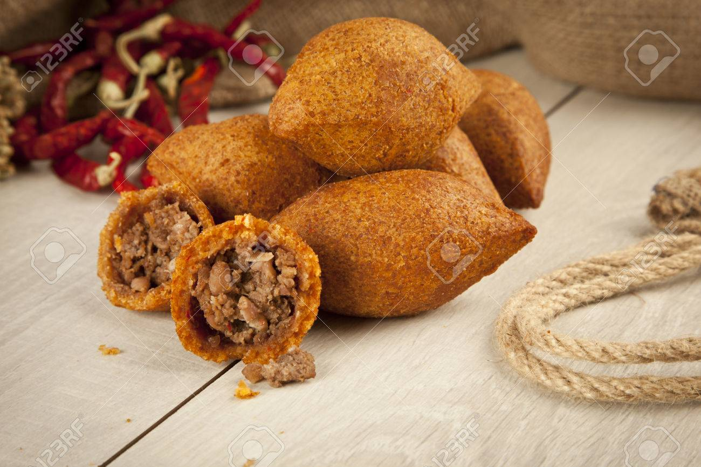

Içli Köfte Tarifi

Malzemeler
- 2 su bardağı köftelik bulgur
- 1 çay bardağı irmik
- 3 su bardağı sıcak su
- 1 çay bardağı un
- 1 adet yumurta
Yapılışı
- İlk başta içli köftemizin iç harcını hazırlayarak soğumaya bırakalım. Bunun için genişçe bir tavaya sıvı yağ alarak küçük küçük doğradığımız soğanları hafif pembeleşinceye kadar kavuralım.
- Sonra kıymayı ilave ederek yaklaşık 5 dakika kadar kavuralım.
- Kavrulan kıymamıza baharatları ve biber salçasını ilave edelim. Güzelce karıştırıp 2-3 dakika daha pişirelim.
- Sonuncu olarak ocağı kapatalım, ceviz ve maydanozu ilave ederek karıştıralım.
Home